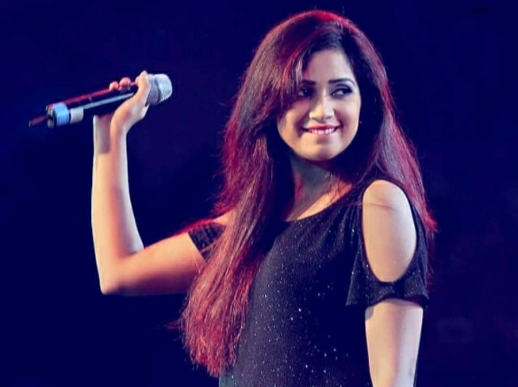

SHREYA GHOSHAL
Shreya Ghoshal (born 12 March 1984) is an Indian playback singer. She has received four National Film Awards, four Kerala State Film Awards, two Tamil Nadu State Film Awards, seven Filmfare Awards and ten Filmfare Awards South. She has recorded songs for films and albums in various Indian languages and has established herself as a leading playback singer of Indian cinema.
Shreya aspired to become a playback singer from an early age. At the age of four, she started learning music. At the age of six, she started her formal training in classical music. At the age of sixteen, she was noticed by the mother of filmmaker Sanjay Leela Bhansali when she entered and won the television singing reality show Sa Re Ga Ma. Following that, she made her Bollywood playback singing debut with Bhansali's romantic drama Devdas (2002) for which she received a National Film Award, a Filmfare Award for Best Female Playback Singer and a Filmfare RD Burman Award for New Music Talent.